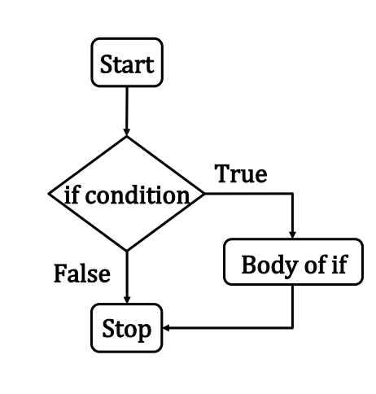

IF ... (block structure)
Conditional Execution
Decision making via conditional statements is an important step in algorithm design; they control the flow of execution of a program.
Conditional statements in Python include:
ifconditional statement : do somethingif....elseconditional statement(s) : do something, or do something elseif....elif....elseconditional statement(s) : do something, or do something else, ... , or do something else
Conditional statements are logical expressions that evaluate as TRUE or FALSE and using these results to perform further operations based on these conditions. All flow control in a program depends on evaluating conditions. The program will proceed diferently based on the outcome of one or more conditions - really sophisticated AI programs are a collection of conditions and correlations.
Logical Comparison Statements
The most common conditional operation is comparison. If we wish to compare whether two
variables are the same we use the == (double equal sign).
For example x == y means the program will ask whether x and y have the same value.
If they do, the result is TRUE if not then the result is FALSE.
Other comparison signs are != does NOT equal, < smaller than, >larger than, <=less than or equal, and >= greater than or equal.
There are also three logical operators when we want to build multiple compares
(multiple conditioning); these are and, or, and not.
The and operator returns TRUE if (and only if) all conditions are TRUE.
For instance 5 == 5 and 5 < 6 will return a TRUE because both conditions are true.
The or operator returns TRUE if at least one condition is true.
If all conditions are FALSE, then it will return a FALSE. For instance 4 > 3 or 17 > 20 or 3 == 2 will return TRUEbecause the first condition is true.
The not operator returns TRUE if the condition after the not keyword is false. Think of it
as a way to do a logic reversal.
# Compare
x = 7
y = 10
print("x =: ",x,"y =: ",y)
print("x is equal to y : ",x==y)
print("x is not equal to y : ",x!=y)
print("x is greater than y : ",x>y)
print("x is less than y : ",x<y)
x =: 7 y =: 10
x is equal to y : False
x is not equal to y : True
x is greater than y : False
x is less than y : True
# Logical operators
print("5 == 5 and 5 < 6 ? ",5 == 5 and 5 < 6)
print("4 > 3 or 17 > 20 ",4 > 3 or 17 > 20)
print("not 5 == 5",not 5 == 5)
5 == 5 and 5 < 6 ? True
4 > 3 or 17 > 20 True
not 5 == 5 False
Block IF statement
The if statement is a common flow control statement.
It allows the program to evaluate if a certain condition is satisfied and to perform a designed action based on the result of the evaluation.
Expressed in a flowchart a block if statement looks like:

As psuedo code:
if(condition is true):
do stuff
Amazon knowing what you kind of want is based on correlations of your past behavior compared to other peoples similar, but more recent behavior, and then it uses conditional statements to decide what item to offer you in your recommendation items. It's spooky, but ultimately just a program running in the background trying to make your money theirs.
The structure of a mutliple condition block if statement is
if condition 1 is met:
do A
elif condition 2 is met:
do B
elif condition 3 is met:
do C
else:
do E
The elif means "else if". The : colon is an important part of the structure it tells where the action begins. Also there are no scope delimiters like (), or {} .
Instead Python uses indentation to isolate blocks of code.
This convention is hugely important - many other coding environments use delimiters (called scoping delimiters), but Python does not. The indentation itself is the scoping delimiter.
The next code fragment illustrates illustrates how the if statements work. The program asks the user for input. The use of raw_input() will let the program read any input as a string
so non-numeric results will not throw an error.
The input is stored in the variable named userInput.
Next the statement if userInput == "1": compares the value of userInput
with the string "1". If the value in the variable is indeed \1", then the program will execute
the block of code in the indentation after the colon.
In this case it will execute
print "Hello World"
print "How do you do? "
Alternatively, if the value of userInput is the string '2', then the program will execute
print "Snakes on a plane "
For all other values the program will execute
print "You did not enter a valid number"
# Block if example
userInput = input('Enter the number 1 or 2')
userInput = str(userInput) # type cast to string, to trap goofy binary/hex inputs
# Use block if structure
if userInput == '1':
print("Hello World")
print("How do you do? ")
elif userInput == '2':
print("Snakes on a plane ")
else:
print("You did not enter a valid number")
When we run the script
Enter the number 1 or 2 1
Hello World
How do you do?
Readings
-
Computational and Inferential Thinking Ani Adhikari and John DeNero, Computational and Inferential Thinking, The Foundations of Data Science, Creative Commons Attribution-NonCommercial-NoDerivatives 4.0 International (CC BY-NC-ND) Chapter 4 Subpart 3 https://www.inferentialthinking.com/chapters/04/3/Comparison.html
-
Computational and Inferential Thinking Ani Adhikari and John DeNero, Computational and Inferential Thinking, The Foundations of Data Science, Creative Commons Attribution-NonCommercial-NoDerivatives 4.0 International (CC BY-NC-ND) Chapter 4 https://www.inferentialthinking.com/chapters/04/Data_Types.html
-
Learn Python the Hard Way (Online Book) (https://learnpythonthehardway.org/book/) Recommended for beginners who want a complete course in programming with Python.
-
LearnPython.org (Interactive Tutorial) (https://www.learnpython.org/) Short, interactive tutorial for those who just need a quick way to pick up Python syntax.